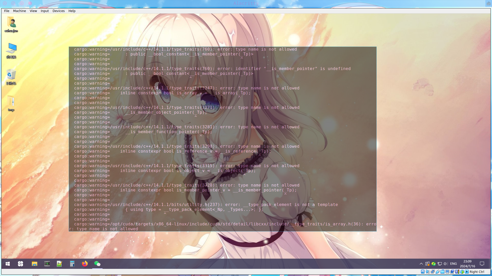
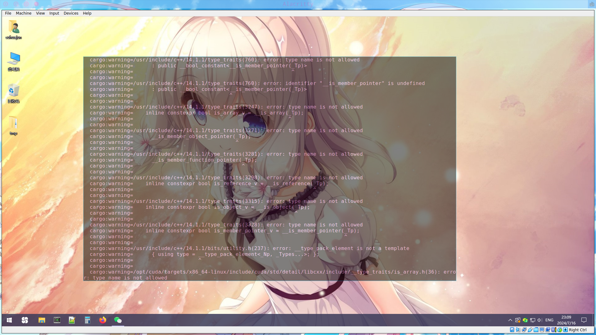

Q & A
-
除了 cpp 和 Rust 还需要什么专业基础嘛？
材料还在整理和补充，会陆续放出
-
直播有回放吗？
有的，每个阶段中的学习视频栏目中将可见每次课程直播回放
- 样例可见导学中关于 OS 训练营大模型引擎项目课程：https://opencamp.cn/os2edu/camp/2024spring/stage/10?tab=video
-
C++ 或者 Rust 对后续专业阶段和项目阶段有什么影响吗，比如某一方向要求是 Rust
AI 编译器是 cpp 做的，大模型推理是 Rust 做的。我们鼓励学员们选择多个方向，难度都不是特别大，专业阶段中不同方向的上课时间也不同，不用担心上课时间冲突
-
关于 InfiniTensor 拉取
这个项目通过 http 进行拉取会出现没有权限的问题，需配置 Github ssh 密钥来通过 ssh 进行克隆到本地操作： 第一步：检查本地主机是否已经存在 ssh key
cd ~/.ssh ls # 查看是否已存在id_rsa和id_rsa.pub文件 # Windows系统则查看C:\Users\<Your Username>\.ssh文件夹下 # 存在可直接看第三步第二步：生成 ssh key
ssh-keygen -t rsa -C "xxx@xxx.com" # 一直回车即可 # Windows系统下同理，不想要后面一串也可以直接运行ssh-keygen指令第三步：获取 ssh key 公钥内容并添加到 Github
复制
id_rsa.pub文件内的内容，之后 Github 右上角点击头像->Settings->SSH and GPG keys->右上角蓝色 New SSH key 按钮->将复制的内容粘贴到 Key 输入框中添加 title 以便管理->最后点击 Add SSH key 即可 验证是否配置 ssh 公钥成功可运行ssh -T git@github.com指令，看见输出Hi xxx! You've successfully authenticated, ...即可 之后即可运行git clone git@github.com:InfiniTensor/InfiniTensor.git克隆 InfiniTensor 到本地 -
InfiniLM 支持问题
目前 InfiniLM 只支持 Llama。对于中文输入，一个方面是使用模型的中文能力问题，另外采样中有些技巧可以控制输出的长度和风格目前并未实现于 InfiniLM，设置一下采样参数会好些
-
关于导学阶段安排
目前导学阶段直接在社区网站阅览学习即可，以及尝试导学实践内容 -- 部署运行 InfiniLM 到本地，以及 exam-gradings 的部署与应用
-
关于后续基础阶段内容问题
后续基础阶段分为 C++基础和 Rust 基础，目前导学阶段若没有 Rust 基础建议可以尝试学习，Rust 方向可提前练习Rustlings（之后基础阶段-Rust 基础方向也将以此为阶段评测），C++方向的测评题目还在编写，目前只能自行复习练习
-
关于 InfiniLM 运行问题

- 遇到以上输出为模型（TinyLlama）文件拉取不完整导致，对于 lfs 大文件需要手动下载放入模型文件中
- 关于 Rust 环境，运行 InfiniLM 需要将 Rust 版本更新至最新的 stable（1.79.0），或者大于等于这个版本的 nightly 也行
-
关于社区平台的课程录播问题
遇到录播视频加载不出来可稍微等待或进行刷新，此为先前录制时的平台问题
-
这个训练营和编译器有啥关系？
深度学习编译器和编译器是两个东西，就好像 javascript 和 java 是两个东西。
或参考知乎问答神经网络的编译器和传统编译器的区别和联系是什么？
-
后续的 AI 编译器主要是做 cuda 后端的吗？
考虑到显卡持有量原因，cuda 是一个单独方向（课也是单独的，作业也是单独的）。
AI 编译器方向主要讲硬件无关的框架和优化知识。
Q：主要是概念吗？有没有深入理解或者实战写 pass 这些环节？
A：第一节课主要讲概念和框架结构，后面几节课都和项目联系挺紧密的，会结合代码举例介绍优化技巧。
-
后期的编译器项目，是在 InfiniTensor 还是 RefactorGraph 基础上做的？
这个暂时没有定，近期会确定好告诉大家，讲课时两个框架都会介绍。
-
训练营的 C++ 使用什么标准？
- InfiniTensor 使用 C++17；
- RefactorGraph 使用 C++20；
-
有没有正式课程的文档？对于有 Rust 经验的学生可以先看看正式课程
暂时还没有，有基础的可以看上期训练营的回放
-
InfiniLM 不用 Nvidia 显卡能运行吗？
可以的，不过现在即使不用 Nvidia 显卡，检测到环境也会编译。也可以在
xtask/Cargo.toml里关掉默认features解决。... [features] default = ["nvidia", "cambricon"] # 去掉nvidia即可 nvidia = ["llama-nv", "llama-nv-distributed"] cambricon = ["llama-cn"] -
cpp 和 rust 的题是开营后才公布吗？
正在开发中，不过在开营前肯定会准备好公布给大家，最早可能下周公布。
-
rustling 可以用之前训练营的 rustling 替代吗？
我们会用更新版的，题目差别不大但是用法不同。
-
基础阶段的 cxx 和 rust 题目都是什么类型？算法题吗？
cxx 题目类型类似 rustlings，语法部分占大多，并做了一个类似 rustlings 的学习软件，难度都比较低。
-
项目有没有整体架构图可以看看？
暂时还没，开发不久，架构变化还挺激烈，不过后续课程会根据现有的画一个。
-
AI 编译器方向需要先学线代吗？
我们几乎不搞训练，至少不开发训练框架，所以几乎不需要微积分；概率论只有采样的时候需要一点；项目应用中主要是最基础的线性代数，矩阵乘和转置。
-
如何判断 InfiniLM 是仅 CPU 运行的还是 CUDA 运行的？
要是运行时没传递
--turbo nv参数就就没有使用 CUDA 运行了，就是用 CPU 推理运行。 注：本词条回答时间为 2024.07.16，后续会添加更多参数，请以实际运行输出为准。查看参数列表，请见：获取帮助
注：本词条回答时间为 2024.07.16，后续会添加更多参数，请以实际运行输出为准。查看参数列表，请见：获取帮助 -
如果 InfiniLM 运行
cargo xtask list-turbo没有返回可用的 Turbo hardware 怎么办？若设备确实存在 N 卡，这种情况为检测不到你的 CUDA，一般来说看一下环境变量
$CUDA_ROOT。 NOTICE Windows 环境下可通过 powershell$env:CUDA_ROOT进行查看。Linux 则使用echo $CUDA_ROOT查看 若没有则需要检查 CUDA toolkit 的安装后再试，确认装好了 CUDA toolkit，然后设置CUDA_ROOT环境变量，之后运行cargo clean后再重新编译运行。- 若编译运行后产生大量 warnings 且报错失败：

可以选择：
- i.
export CXX=g++-13指定 g++ 编译器版本，再次编译运行 - ii. 换个干净环境重新来（docker）
- iii. 弃坑关了 cuda features 退回 CPU
- i.
理想运行输出：

- 若编译运行后产生大量 warnings 且报错失败：

可以选择：
-
模型需要多少显存，2GB 好像不够
平时用的大概 6G 显存可以跑 2B 模型，理论上 2G 跑 1B 够用的但是系统总要占点。目前量化还在开发中，近期我们看看能不能找一些更小的模型跑起来。
-
InfiniLM 推荐在 wsl 运行还是直接在 win 运行啊？
win 环境能配好就推荐 win，wsl2 磁盘速度受限 非专业版 VMWare 可能无法检测到 GPU 的存在，如果想要用 GPU，那么尽量不要用 VMWare
-
InfiniLM 是怎么检测 CUDA 的？
InfiniLM 通过调用 find_cuda_helper 查找 CUDA 环境
-
运行
exam-grading提交评测报错找不到子模块 以上输出一般是因为添加的子模块 GitHub 仓库权限为 private 导致的，将要添加为子模块的仓库权限设置为 public 即可。
以上输出一般是因为添加的子模块 GitHub 仓库权限为 private 导致的，将要添加为子模块的仓库权限设置为 public 即可。 -
除了
TinyLlama还有没有其他能在 InfiniLM 框架中运行的更大的模型？可以上 huggingface 上寻找一下，不过 Llama 2 和 3 在模型结构上兼容，但
tokenizer不兼容，导致跑不起来。 也可以看一下启元推出的九格 8B 模型：模型仓库 -
用的 mac air，配置在后续跟不跟的上呢？
CUDA 方向不行，其它都没问题
-
exam-grading：如果 initialize submodules and check for experiments 成功了，但是 test job for other submodules 跳过了是什么原因？
原因是没检测到
exams目录，test job for other submodules 这个任务只有在检测到exams目录存在才会运行 -
是否也能让 InfiniLM 支持 AMD 的显卡呢？
暂时没有这个支持计划，NVIDIA 之后是国产硬件，
-
Mac 的 GPU 是不是还没有支持？
由于不知道 Mac 的 GPU 如何开发，就当 Mac 没有 GPU 吧